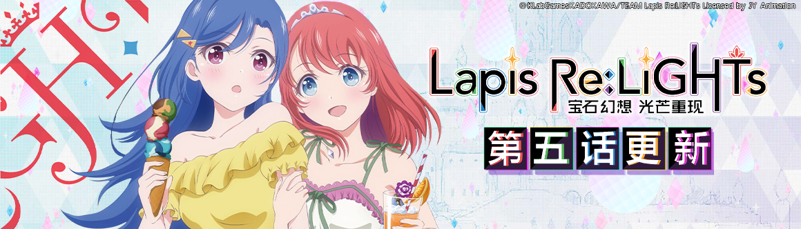
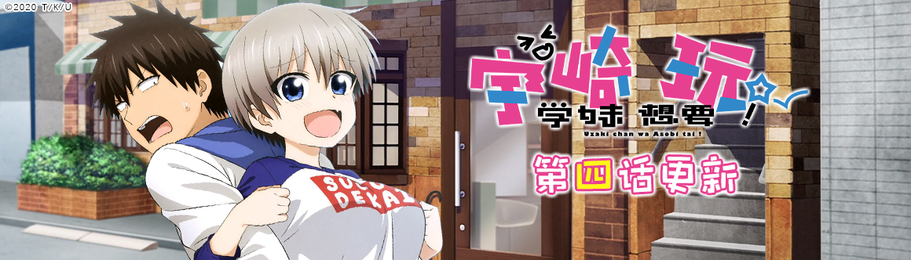
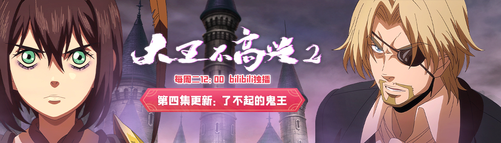
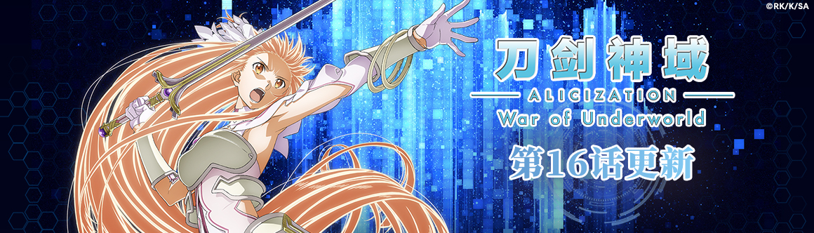
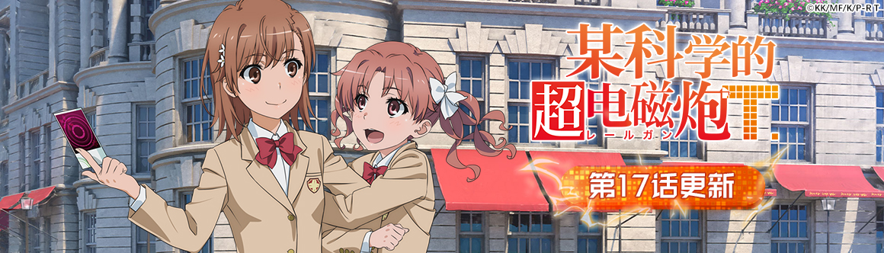
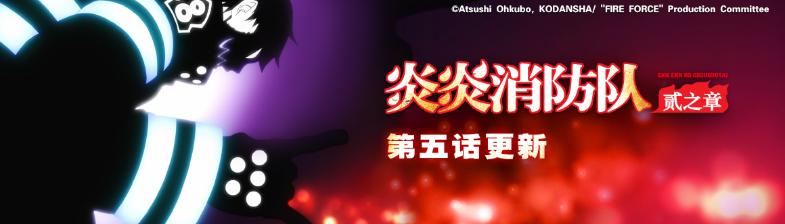

宝石幻想 光芒重现
在这个世界上，“魔女”们进行着偶像活动——因为她们的魔力源泉，是来自人们的快乐情绪。主人公缇亚拉，是王国的第二公主，同时也是“魔女”养成机构——芙洛拉女子学院的一名学生。明明憧憬着成为一流的“魔女”，她所属的小队“霓光”却处于被集体退学的危机？！缇亚拉与“霓光”的同伴们能够克服重重困难，站上梦寐以求的舞台吗？

宇崎学妹想要玩！
性格有些孤僻喜爱安静的大学３年级生，樱井真一。总是被小一届，同高中毕业的学妹宇崎花，以各种照顾爱耍孤僻的学长的名义为由，进行各种无厘头的纠缠。虽然一开始觉得有点困扰，但却逐渐习惯起来…

大王不高兴
大家好，我是新上任的大王阎小罗，说出来你可能不信，本王又回来啦！西大陆地界的攻势更加猛烈，甚至煽动起东大陆天界和地界的矛盾，而最让本王无法忍受的是，他们竟然利用了本王最好的伙伴——战小癸！为了世界和平，东大陆要正式开始反击了，敬请期待本王的表现吧！

刀剑神域 爱丽丝篇 异界战争 -终章-
桐人、尤吉欧、爱丽丝。距离两名修剑士和一名整合骑士打败了最高祭司阿多米尼斯多雷特已过去了半年。结束了战斗，爱丽丝在故乡卢利特村生活。在她的身旁，是失去了挚友，自己也失去了手臂和心的桐人。献身般支撑着他的爱丽丝，丝毫没有保留像以前一样作为骑士的心。“告诉我，桐人……我究竟该怎么办？”然而，通往将
Underworld
全境引向悲剧的“最终压力测试”的倒计时，却毫不留情地推进着。仿佛与之相呼应一般，在“黑暗领域”的深处，暗黑神贝库达复活了。他率领暗黑帝国的军队，为了得到“光之巫女”，开始向“人界”进攻。指挥“人界”军队的贝尔库利等人，决心与“黑暗领域”的军队展开前所未有的大战。但在他们身旁，并没有发现爱丽丝，以及拯救了“人界”的两位...

某科学的超电磁炮T
有 230
万人口，其中八成人口为学生的「学园都市」，是比其他地区科技更为先进，并从事「超能力开发」的特殊地区。而整座学园都市中仅有七人的等级
5
超能力者之一御坂美琴，由于她的能力与个性使然，因而被卷入了学园都市中所发生的种种事件……

炎炎消防队 贰之章
这个「国家」正隐瞒着什么——自从在“地下”的激战结束后，森罗他们知晓了「传教者」的野心。他们的目的是集合所有「安德拉爆炎」的拥有者，重现贰佰伍拾年前发生的大灾难，毁灭世界。身为安德拉爆炎的拥有者，森罗已被传教者盯上，但他仍在为了阻止传教者的目的而持续行动着。与拥有「安德拉爆炎」的少女相遇，以及，被皇国隐藏起来的，「天照」背后的巨大秘密。因火焰而疯狂，同时又被火焰所引导的少年，正一步步接近真相。